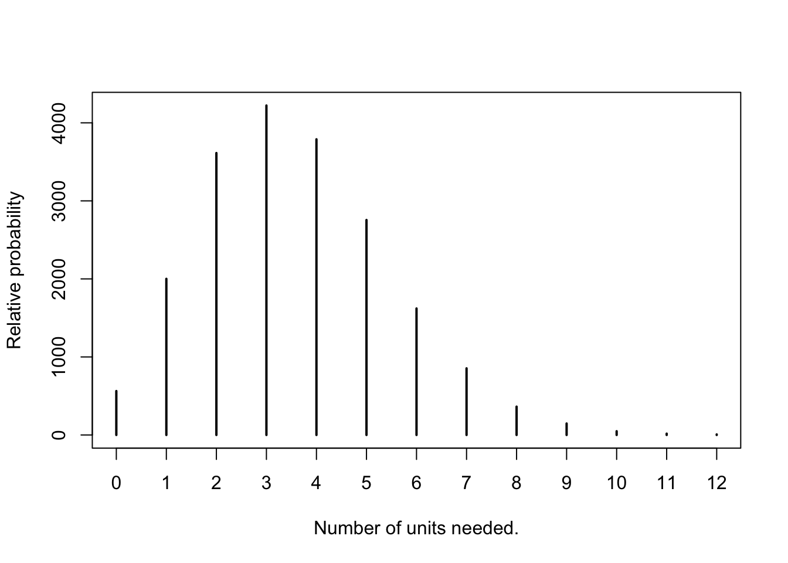

Instructor Teaching Notes for Lesson 26
Math300Z
Review from Lesson 25
The proper form for a prediction is a list of possible outcomes, each assigned a probability. Over the whole list, the probabilities must add up to 1. We call this list a probability distribution.
The modeling software produces a prediction interval, which is much wider than a confidence interval. Confidence interval length goes to zero as \(n\rightarrow\infty\), but prediction interval stays pretty much the same.
For confidence intervals, use 95% (the convention).
Reverse engineering the prediction interval
A prediction interval has a form like [15, 23] or, equivalently, 19 \(\pm\) 4. This is not a probability distribution.
HOWEVER, it is a shorthand for a distribution: called variously the normal or gaussian or bell-shaped distribution. - This distribution has two parameters: the mean and the standard deviation. - For the 19 \(\pm\) 4 prediction interval, the mean is 19 and the standard deviation is 4/2.
The prediction interval covers the central 95% of the probability.
Events at the center are about 7 times more likely than at the ends of the prediction interval. About 2/3 of the probability is within \(\pm 1\) standard deviation.
Why a probability distribution for prediction?
To help in making decisions. Example: Silicon Valley Bank is trying to decide what fraction of its assets to put in long-term government bonds.
If the interest rate is 2.5%, then a bond paying $1000 in 10-years time, if it is to be worthwhile should cost less: $780.
- If the interest rate falls to 1.5%, then the bond is worth more: $860.
- If the interest rate increases to 4.5%, then the bond is worth less: $644
SVB made a bet on interest rates. This is closely related to prediction.
Banks hire economists and other specialists to make predictions about things like interest rates. They use these predictions to estimate risk. For instance, if the bank’s assets fall in value by 15%, the bank will not have enough money on hand to pay depositors, leading to a run on the bank, ….
Imagine this prediction about interest rates one year after buying the government bonds at $780. (We aren’t going to worry about where such predictions come from. The point for us is to illustrate how the probability form of prediction helps in making decisions.)
According to prediction model, the probability of the interest rate leading to a 80% decline (or more) is 1.9%.
The contest
[1] 0.3396823 0.6603177Updating a probability distribution
As interest rates climbed from 2.5%, SVB ought to have revised its prediction of future interest rate and reduced the risk of catastrophic failure by selling off the troubled assets.
But how to update?
The correct procedure is called Bayesian updating. Here’s an example: